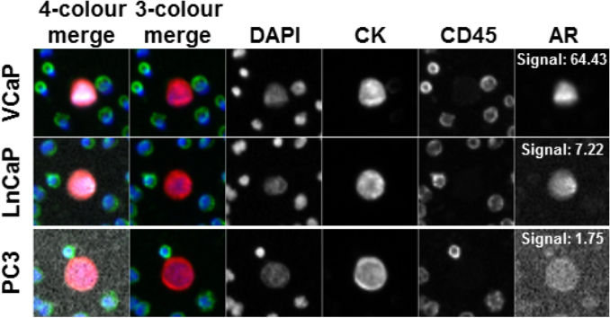
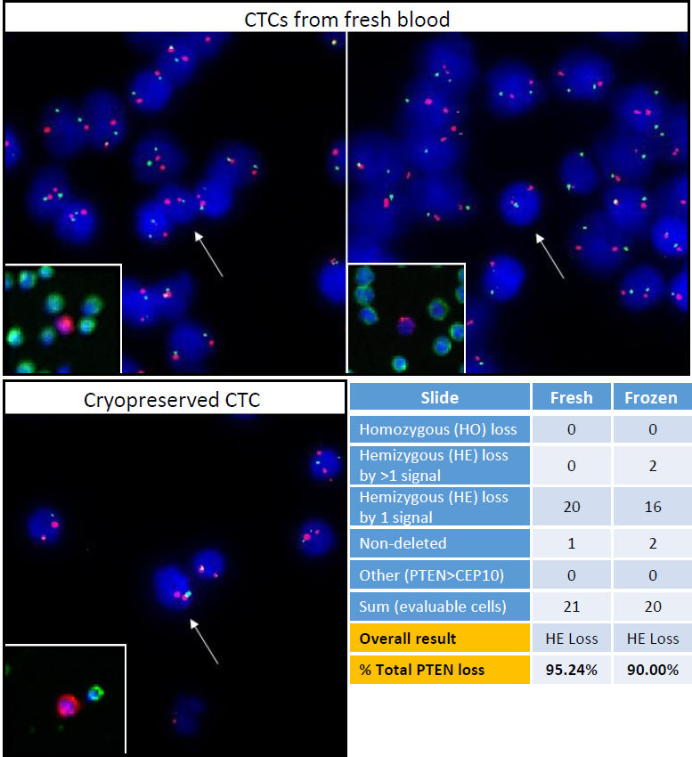
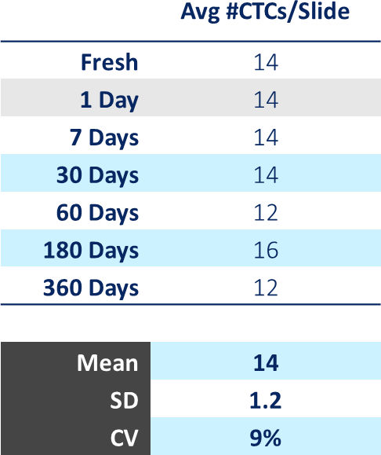

The Epic Sciences platform for unbiased CTCs from liquid biopsy.
WE FIND RARE CELLS
The Epic Sciences™ platform technology is designed to find rare cells where they don’t belong. The core technology is adaptable to mutlitple sample sources and can be customized to target a variety of different biomarkers. If you are trying to find a rare event in a sea of normal, we may be able to help you.
Platform Analytical Validation Proof of Concept

{kind=link}
Human prostate cancer cell line control cells (CLCs; VCaP, LnCaP or PC3) were spiked into healthy donor blood, processed onto slides and stained with CK, CD45, DAPI and N-terminal androgen receptor (AR) antibodies. Additional slides were processed for PTEN loss by FISH. Subsequently, individual CLCs were recovered and analyzed for whole genome copy number variation by NGS. Representative images (10X) of individual CLCs detected, each with varying levels of AR expression (AR signal denoted in white).
Genetic Analysis of Cryopreserved CTC's

{kind=link}
Cryopreserved CTCs from PBMC pellets are viable for genetic analysis. After IF staining and protein characterization, patient CTCs recovered from cryopreservation were assessed via PTEN FISH. CTC homozygous PTEN loss is defined as the complete absence of PTEN (10q23.31; green) signals with the presence of ≥1 centromeric CEP10 (10p11.1-q11.1; red) signal(s) within the same cell. CTCs with present PTEN signals < CEP10 signals are indicative of hemizygous PTEN loss. Preservation of WBC and CTC morphology was observed in frozen samples after fluorescent probe hybridization as well as a consistent assessment of PTEN hemizygous loss in all CTCs assessed (95% & 90% PTEN loss in fresh and frozen material, respectively). Neighboring WBCs were used as internal controls for normal genetic status and to establish proper assay specificity.
CTC enumeration on a liquid biopsy from a cancer patient shows that the number of CTCs and level of CK protein expression are stable out to one year.

{kind=link}
Currently CTC stability on patient sample slides has been demonstrated for up to one year, with studies ongoing to determine longer term storage stability. A cancer patient blood sample was processed onto slides using the Epic Sciences cell deposition workflow, and 2 freshly prepared slides were stained with Epic Sciences 3-color immunofluorescence assay, measuring DAPI, CD45 and CK expression. The average # CTCs per slide was determined to be 14 (right graph below), with cytokeratin expression for each CTC enumerated on the "protein expression" (left graph below). The remainder of the patient slides were frozen at -80C in our biorepository. To test CTC stability over time, 2 additional slides were thawed and tested at the time points 1 day, 1 week, 1 month, 3 months, 6 months and 1 year, and CTC enumeration and CK expression were measured, yielding CTC enumeration of 14 ± 1.2 CTCs/slide, with a percent CV of 9%. Similarly, average CK expression across the CTCs enumerated remained consistent throughout one year of sample storage.
Have more questions? Set up a meeting with our technology specialists.
Request your meeting time today
Request your meeting time today
Technical Resources
Webinar: Epic Sciences technology overview
Sign up to watch the recorded webinar
Publication: Analytical Validation of the Epic CTC Platform
Publication: Detection and Characterization of Circulating Tumour Cells from Frozen Peripheral Blood
Contact us:
info@epicsciences.com
info@epicsciences.com